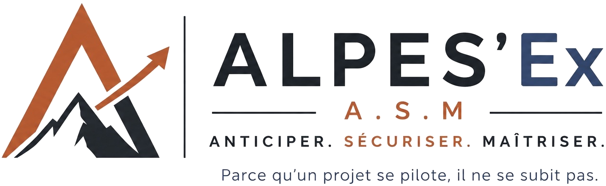

Projet traditionnel
Piloter un transfert industriel stratégique.
Coordonner les équipes, sécuriser les délais et garantir la remise en production.

ALPES'Ex · Pilotage industriel
Une méthode de pilotage pour tous vos projets industriels.
Parce qu’un projet se pilote, il ne se subit pas.
Le constat
Les dérives résultent rarement d’un événement isolé. Elles naissent d’une accumulation de décisions tardives, d’informations dispersées, de risques mal anticipés et d’un manque de visibilité.
Méthode ASM
ASM structure les projets industriels, sécurise les décisions et fournit une vision claire à chaque étape.
Cycle projet
Une continuité de pilotage sur tout le cycle de vie du projet.
PC ASM
Le PC ASM centralise les informations essentielles du projet afin d’offrir une vision claire, partagée et actualisée.
Prestations
Expérience
Coordonner les équipes, sécuriser les délais et garantir la remise en production.
Accompagner le projet des premières études jusqu’à la réception finale.
Transformer données, organisation et décisions en un pilotage clair et partagé.
Chaque projet est différent. La méthode ASM reste la même.
ALPES'Ex
ALPES'Ex est née d’une conviction simple : les projets industriels ne manquent pas de compétences. Ils manquent souvent d’une méthode capable de donner une vision commune, d’anticiper les dérives et de sécuriser les décisions.
C’est cette conviction qui a conduit au développement de la méthode ASM.
Contact
Présentez-nous votre contexte. Nous reviendrons vers vous pour organiser un premier échange.
Un projet ASM ne dérive pas.
Il se pilote.